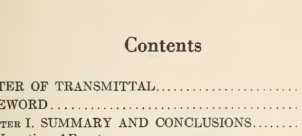
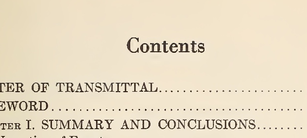
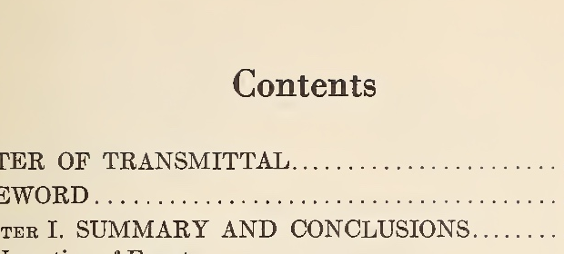

Identical 180-DPI source rasters. These crops retain decoded pixels and introduce no additional JPEG compression. Browser zoom can enlarge the comparison. Global pixel-error scores do not prove transcription accuracy.
Warren physical page 21
PNG · same source pixels

Q90 · same source pixels

Q95 · same source pixels

Warren physical page 50
PNG · same source pixelsQ90 · same source pixelsQ95 · same source pixels